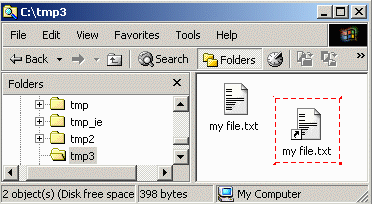
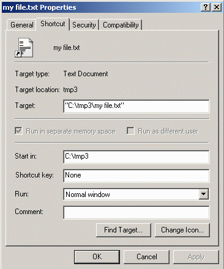
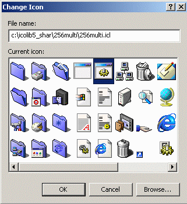
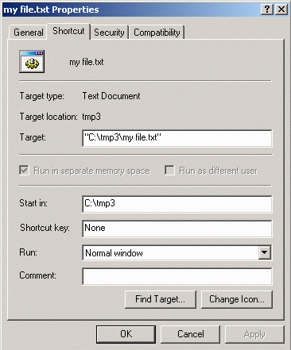
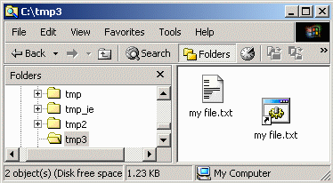

Changing Desktop Icons
Top
Drives
Folders
Files
Shortcuts
System
Shortcuts
- Changing the icon for a shortcut is quite straight forward.

- Right click on the shortcut and select the Properties option
from the popup menu. A Properties window will appear. Click on the
Change Icon button.

- A Change Icon window will appear. Into the File name:
field, enter the path of the ICL file containing the icon to be used.
The pathname for the icon library used in this example is
C:\icolib5_shar\256multi\256multi.icl. Highlight the icon to be used
and click on the OK button, or just double click on the icon itself.

- The icon will have changed in the Properties window. Click on the
OK button.

- The shortcut icon has been changed while the original text file icon
remains the same as before. No other icon is changed by this procedure.

- You can now try changing some of the
System Icons on your computer.